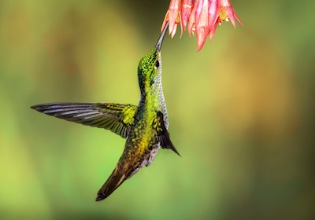
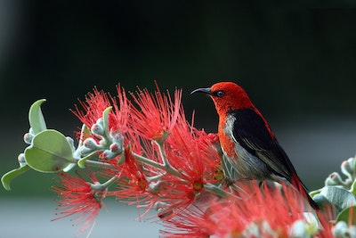

Hummingbird
花の蜜を主食としており、ホバリングで空中で静止しながら、花の中にクチバシをさしこみ、蜜を吸うという独特の食事の取り方をする（他に昆虫も食べる）。花の蜜を吸うためにクチバシは細長い形状をしている。そのため、昆虫であるスズメガが生息する地域では、成虫の動作が酷似するため、しばしば両者を見間違うことがある。 同様な例として、90度近く湾曲したクチバシをもつカマハシハチドリ Eutoxeres aquila と、バショウ科ヘリコニア属の花とのペアが挙げられる。（ウィキペディアより）
Red-headed myzomela
あるスズメ目の鳥ミツスイので見つかった家族、Meliphagidae、オーストラリア、インドネシア、およびパプアニューギニア。それは1840年にジョン・グールドによって記述されました。指名されたレースで2つの亜種が認められます。erythrocephalaは熱帯オーストラリアの海岸線、そして周りに分布M.電子。ニューギニアのinfuscata。広く分布していますが、この範囲内には豊富ではありません。しばらくIUCN オーストラリアの人口を列挙しています。infuscataは脅威に近づいていると一般的に言えば、その保全が最も懸念されていないことを意味する。